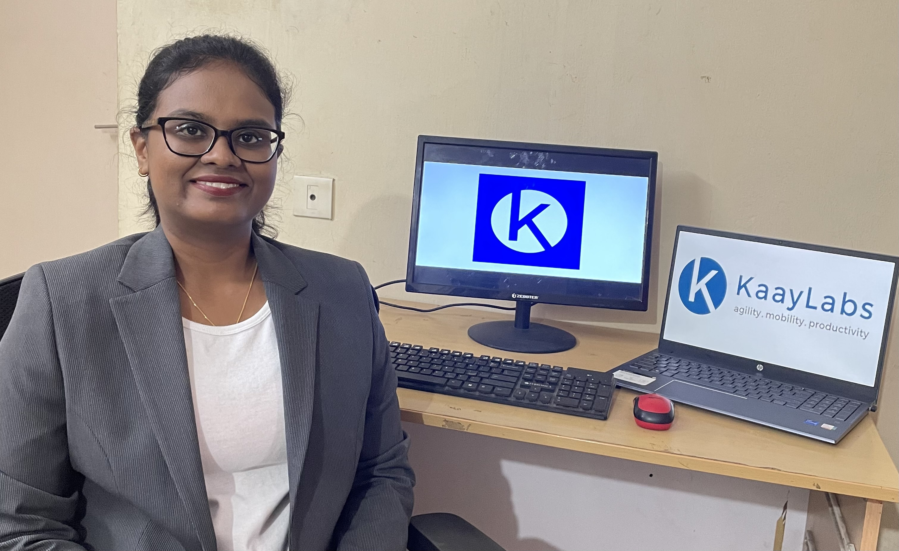

My Summer Internship Experiance at Kaay Labs
During summer of 2023, I had the privilege of working as a Data Engineer Intern at Kaay Labs - Software Development, and I am thrilled to share my enriching journey with you all.
Kaay Labs, at the forefront of constructing innovation-focused labs for start-up firms, provided me with an exceptional platform to delve into and make meaningful contributions to cutting-edge Data projects.
From the outset, my internship at Kaay Labs proved to be a journey of continuous learning. I immersed myself in the realm of data engineering, learning from domain experts and team members. Understanding the product and exploring the clinical aspects of the projects were eye-opening experiences that set the stage for my internship.
A major highlight of my internship was collaborating with the brilliant minds at HISTOPIE, an affiliated company of Kaay Labs, renowned for its expertise in application development and data services. Histopie's mission to harness the potential of data and drive growth and innovation resonated deeply with me.
As a Data Engineering Intern, my role was diverse and challenging. I had the opportunity to develop efficient ETL data pipelines using Kleene, a sophisticated data-cleaning tool. The experience was both rewarding and enlightening, as I delved into data analysis, manipulation using SQL, and hands-on work with various data types, including structured, semi-structured, and unstructured data. Moreover, working with cloud databases like Snowflake opened my eyes to the world of data warehousing concepts.
Kaay Labs fostered an inclusive and supportive environment, even in a fully remote setup. The team, led by Krishnan, was welcoming and encouraging, making me feel valued and motivated to give my best.
The summer at Kaay Labs has been a transformative experience, both professionally and personally. The skills and knowledge gained during this internship will undoubtedly shape my future endeavours.
